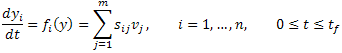
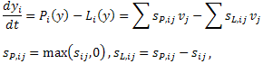
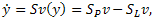
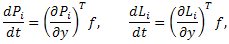
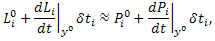
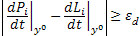
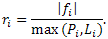

Quasi-Steady-State Analysis
In homogeneous chemical kinetics, the dynamic model can be written in the following form of the ODE.

Since a chemical reaction system generally consists of production and loss terms, the ODE can be rewritten as:

or with a matrix-vector notation,

where y ∈ R+n is a concentration vector, Pi:
R+n → R+
is a production term, and Li : R+n → R+ is a loss terms.
S is a stoichiometric matrix and v is a reaction rate vector.
The subscripts P and L denote the production and loss, respectively.
Generally, it can be said that if yi exhibits a quasi-steady state behavior,
such behavior is observed after a short period of time for the corresponding Pi and Li
to balance each other. At the moment either Pi or Li enlarge,
the period during which Pi balances with Li can be evaluated in a simple manner.
By chain rule,

where f = (f1, f2,...)T.
Let δti be a short time period after which Pi and Li
balance each other. Then, we have following relationship:

where superscript 0 indicates the reference value. Rearranging the equation gives:
If the denominator on the righthand side of equation (1) is not zero, namely

for some εd > 0, we can compute the time scale δti from this equation.
If the magnitude of the time scale is large, namely, |δti| > εt
for some εt > 0, yi is considered to exhibit slow dynamics.
If 0 ≤ δti ≤ εt, it will reach a balancing
state quickly and QSSA can be applied.
If -εt ≤ δti ≤ 0,
another scale factor should be used to determine whether the i'th variable is balanced or not;
the ratio of |fi| to the larger one of Pi and Li,

If ri is large, namely ri > εr
for some εr > 0, the production and loss are neither balanced nor can be balanced soon,
hence QSSA is not applicable to such yi.
The applicability of QSSA to the ith variable is summarized in table 1.
Table 1: Detection fast/slow dynamics for variable yi
| |
|
0 ≤ δti ≤ εt |
|
-εt < δti ≤ 0 |
|
|δti| > εt |
| ri ≤ εr |
|
Fast |
|
Fast |
|
Slow |
| ri > εr |
|
Fast |
|
Slow |
|
Slow |
References
- J Choi, KW Yang, TY Lee and SY Lee. "New time-scale criteria for model simplification of bio-reaction systems". BMC Bioinformatics, 9:338, 2008.